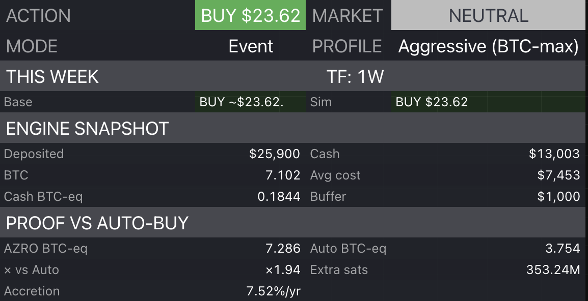

Stack
Buy-only accumulation
For operators who want disciplined re-engagement without trims.
Choose the policy that matches your philosophy without learning a new interface.
For operators who want disciplined re-engagement without trims.

Optional trims in elevated-risk conditions plus structured re-engagement behavior.

Optional adjustments for operators focused on exceptional cycle conditions.

For users comfortable with higher timing risk rather than strict always-hold exposure.